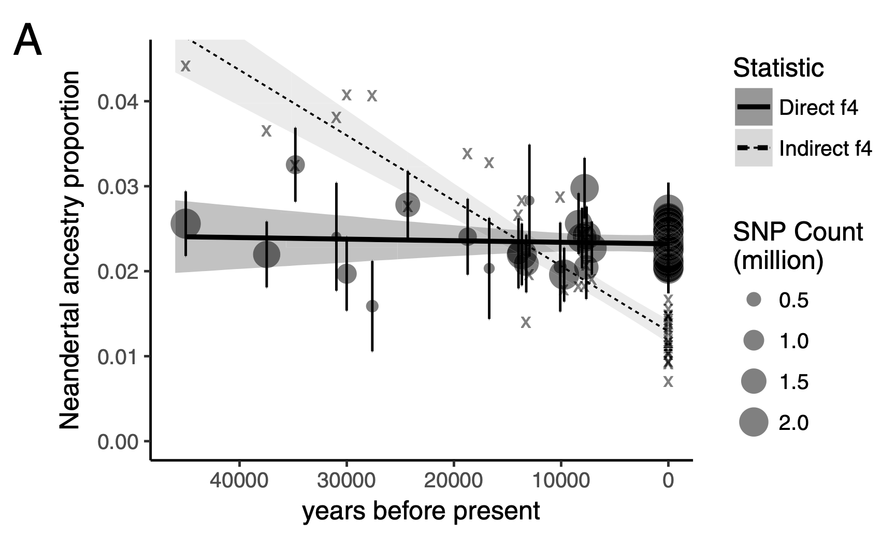

library(slendr)
init_env()
<... population definitions ...>
<... gene-flow definition ...>
model <- compile_model(
populations = list(...),
gene_flow = <...>,
generation_time = 30
)
plot_model(model) # verify visuallyBuilding intuition into popgen concepts and simulation-based inference
Reference materials
Unless you’re already a slendr expert, you will probably need some reference materials to do the exercises. Here are the options:
- You can refer to the slides with the slendr crash course. The exercises will follow the progression of our walkthrough of the slendr functionality in the first part of this activity. You can find the material rendered as [normal slides]() or [continuous handouts]() (the latter being probably a bit more practical for reference.
- Tutorials on the slendr website.
- Manual pages of all available slendr functions. Note that you can get the help page of every slendr R
functionby typing?functionin the R console. For instance, typing?ts_tajimagives you the help page of the tskit/slendr function implementing the tree-based computation of Tajima’s D.
Installation setup
The easiest way to set up everything on your computer is to do the following:
Clone the repository with the activity materials (source code with slides and exercises materials, example scripts, and solutions). In a shell terminal, in your home directory (or anywhere else, really) you can run:
$ git clone https://github.com/bodkan/cesky-krumlov-2025 ~/slendr_activityInstall all the R package dependencies by going into the activity repository directory you just cloned and installing the necessary R packages. We’re using the renv package to manage all the dependencies, so you don’t have to track every package individually.
First go into the project directory:
$ cd ~/slendr_activityOpen the R terminal in that directory. You should get a note that the renv package is being automatically setup, like this:
$ R [... R startup information stuff ...] # Bootstrapping renv 1.0.11 -------------------------------------------------- - Downloading renv ... OK - Installing renv ... OK - Project '~/slendr_activity' loaded. [renv 1.0.11] - One or more packages recorded in the lockfile are not installed. - Use `renv::status()` for more details.Install the R package dependencies (still in the R console!):
> renv::restore(prompt = FALSE)Set up the Python environment used by the slendr R package for simulation and tree-sequence analysis (still in the R console!):
> slendr::setup_env(agree = TRUE)If everything worked, you should get an optimistic message saying:
====================================================================== Python environment for slendr has been successfuly created, and the R interface to msprime, tskit, and pyslim modules has been activated. In future sessions, activate this environment by calling init_env(). =======================================================================
- Open RStudio and navigate to your project directory via
File -> Open Project....
If the setup_env() installation procedure fails, try the following:
- Delete the failed installation attempt:
slendr::clear_env(force = TRUE, all = TRUE)- Try installing it again, this time using
pipas a Python installation method (the default iscondawhich unfortunately fails fairly often):
slendr::setup_env(agree = TRUE, pip = TRUE)In every previous installments of this workshop, this is all that was needed to resolve problems.
Installing SLiM
It’s unclear whether we will manage to go through the entirety of the final exercise. However, to be able to do this, having SLiM at least version 4.2 (and it being available in your unix $PATH!) is required. If this isn’t possible for your, don’t worry. You’ll be able to do most of that exercise even without SLiM, and I will demonstrate the whole exercise (including the SLiM bit) for you.
How will the exercises work?
Your goal for each exercise will be to write a complete script. I suggest you name the script for each exercise as exercise1.R, exercise2.R, etc., to keep things tidy.
Unless you have a strong preference for another editor or IDE, I strongly suggest you use RStudio (either on your machine or in the cloud, depending on where you did the setup steps above).
Each exercise is compose of individual parts, which are designed to build one upon the other in the order they are specified.
All the exercises will involve “real coding”! If you’ve never really programmed entire scripts before, this could feel a little intimidating. Don’t worry. If you’re ever lost, just take a peek into the solutions/ directory for the respective solution script. Always try to work on a solution on your own, but never let this be a barrier to your progress. Feel free to copy-paste bits of my solutions into your own scripts.
If you find yourself totally lost, don’t hesitate to read my solution scripts from the get go, trying to understand what’s going on in them, and executing them line by line in your RStudio session.
Exercise 1
Reminder: you can use the handout version of the slides for reference.
Part 1: write this model in slendr

Hint: Start script exercise1.R script in your RStudio session using this “template”:
Note: You can also specify time in units of “years ago”, just write them in a decreasing order (7Mya → 6Mya → …, as shown above).
Note: Plotting of models can be sometimes a little wonky. When plotting your model, experiment with arguments log = TRUE, proportions = TRUE, gene_flow = TRUE. Check ?plot_model for more information on these.
Bonus
- Write your own model!
Exercise 2
Reminder: you can use the handout version of the slides for reference.
Sampling aDNA samples through time
Imagine we have pop1, pop2, … compiled in a model.
To record ancient individuals in the tree sequence, we can use schedule_sampling() like this:
schedule_sampling(
model, # compiled slendr model object
times = c(100, 500), # at these times (can be also a single number) ...
list(pop1, 42), # ... sample 42 individuals from pop1
list(pop2, 10), # ... sample 10 individuals from pop2
list(pop3, 1) # ... sample 1 individual from pop 3
) Sampling schedule format
The output of schedule_sampling() is a plain data frame:
schedule_sampling(model, times = c(40000, 30000, 20000, 10000), list(eur, 1)). . .
We can bind multiple sampling schedules together, giving us finer control about sampling:
eur_samples <- schedule_sampling(model, times = c(40000, 30000, 20000, 10000, 0), list(eur, 1))
afr_samples <- schedule_sampling(model, times = 0, list(afr, 1))
samples <- rbind(eur_samples, afr_samples)How to use a sampling schedule?
To sample individuals based on a given schedule, we use the samples = argument of the msprime() function:
ts <-
msprime(model, samples = samples, sequence_length = 1e6, recombination_rate = 1e-8) %>%
ts_mutate(mutation_rate = 1e-8). . .
We can verify that only specific individuals are recorded:
ts_samples(ts)Exercise #4
Use these one-page handouts for reference.
Exercise #4a: ancient samples
Let’s return to your introgression model:
Exercise #4a: ancient samples
Simulate data from your model using this sampling:
- one present-day CHIMP and AFR individual
- 20 present-day EUR individuals
- 1 NEA at 70 ky, 1 NEA at 40 ky
- 1 EUR every 1000 years between 50-5 kya
Reminder: you can do this by:
samples <- # rbind(...) together individual schedule_sampling() data frames
ts <-
msprime(model, samples = samples, sequence_length = 100e6, recombination_rate = 1e-8) %>%
ts_mutate(mutation_rate = 1e-8)Exercise #4b: \(f_4\)-ratio statistic
Use \(f_4\)-ratio statistic to replicate the following figure:

Exercise #3: more statistics! (a)
Use msprime() to simulate a 50Mb tree sequence ts from your introgression model in model1.R (if that takes more than two minutes, try just 10Mb).
(Remember to add mutations with ts_mutate().)
Exercise #3: more statistics! (b)
In model1.R compute (some of) these on your ts object:
nucleotide
ts_diversity()in each populationts_divergence()between populationsoutgroup
ts_f3(A; B, C)using CHIMP as the outgroup (A!) for different pairs of “B” and “C” populations- using Ben’s explanation on Wednesday, try to compute this \(f_3\) using combination of \(f_2\) statistics (
ts_f2(A, B))
- using Ben’s explanation on Wednesday, try to compute this \(f_3\) using combination of \(f_2\) statistics (
You can find help by typing ?ts_diversity etc. into R!
Exercise #3: more statistics! (c)
Compute \(f_4\) test of Neanderthal introgression in EUR:
Hint: check the values of these two statistics (
ts_f4()):- \(f_4\)(<afr>, <eur>; <neand>, <chimp>)
- \(f_4\)(<afr1>, <afr2>; <neand>, <chimp>)]
Is one “much more negative” than the other as expected assuming introgression?
You’ve learned about symmetries in \(f_4\) depending on the arrangement of the “quartet”. How many unique \(f_4\) values involving a single quartet can you find and why? (When computing
ts_f4()here, setmode = "branch").
Exercise 3
Reminder: you can use the handout version of the slides for reference.
Use these one-page handouts for reference.
Part a: One-population AFS simulator
In a new script model2.R write a function called simulate_afs(), which will take Ne as its only parameter.
It should create a one-population forward-time model (simulation_length 100000, generation_time 1), simulate 10Mb tree sequence (recombination and mutation rates of 1e-8), compute AFS for 10 samples and return it.
. . .
Use this function to compute AFS vectors for various Ne values. Plot those AFS and observe how (and why?) do they differ based on Ne you simulated.
Part a: Hint
You can start building model2.R from this “template”:
library(slendr); init_env()
simulate_afs <- function(Ne) {
... your one-population model code: population(), compile_model(), msprime() ...
result <- ... compute AFS using ts_afs() on 10 samples, save it to `result` ...
return(result)
}
afs_1 <- simulate_afs(Ne = 1000)
plot(afs_1, type ="o") Note: We drop the first element (afs[-1]) technical reasons related to tskit. You don’t have to worry about that here, but you can read this for more detail.
When used in R, your function should work like this:
simulate_afs(Ne = 1000)Part b: Estimating Ne using AFS
Imagine you sequenced 10 samples from a population and computed this AFS vector in R (# singletons, doubletons, etc.):
afs_observed <- c(2520, 1449, 855, 622, 530, 446, 365, 334, 349, 244,
264, 218, 133, 173, 159, 142, 167, 129, 125, 143). . .
You know that the population had a constant \(N_e\) somewhere between 1000 and 30000 for the past 100,000 generations, and had mutation and recombination rates of 1e-8 (i.e., parameters already implemented by the simulate_afs() function).
. . .
Guess the true \(N_e\) given the observed AFS by running single-population simulations for a range of \(N_e\) values and comparing each run to afs_observed.
Part b: Hints
Using your custom simulate_afs() function, find the value of Ne that will give the closest AFS to the observed AFS:
option #1 [easy]: Plot AFS vectors for various \(N_e\) values, then eyeball which looks closest to the observed AFS
option #2 [hard]: Simulate AFS vectors in steps of possible
Ne(maybelapply()?), find the closest AFS
Exercise #2: solution
See ex2_simple.R for a simple “eyeballing” solution.
See ex2_grid.R for a more elaborate grid-search solution.
Exercise 4
Reminder: you can use the handout version of the slides for reference.
Exercise 5
Reminder: you can use the handout version of the slides for reference.